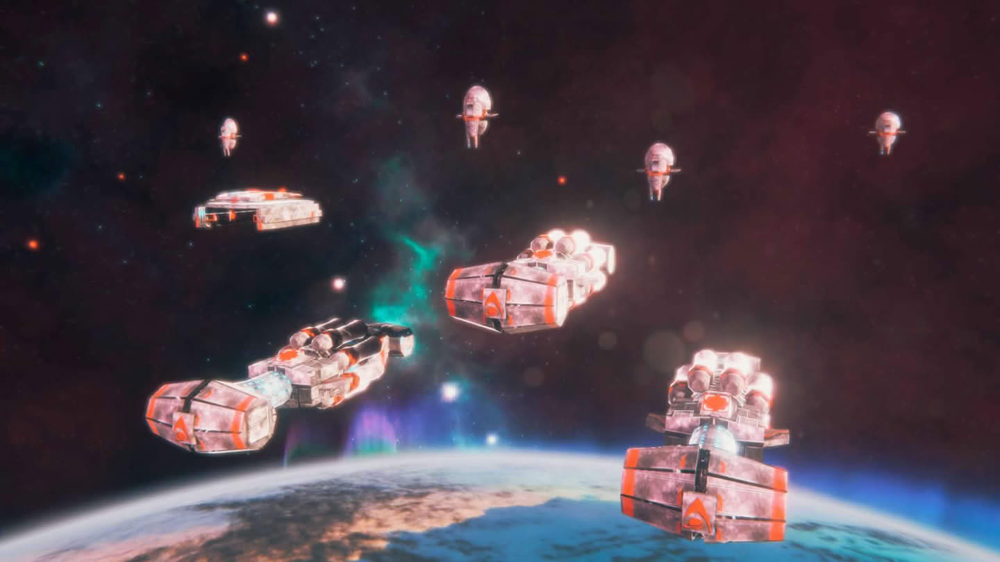
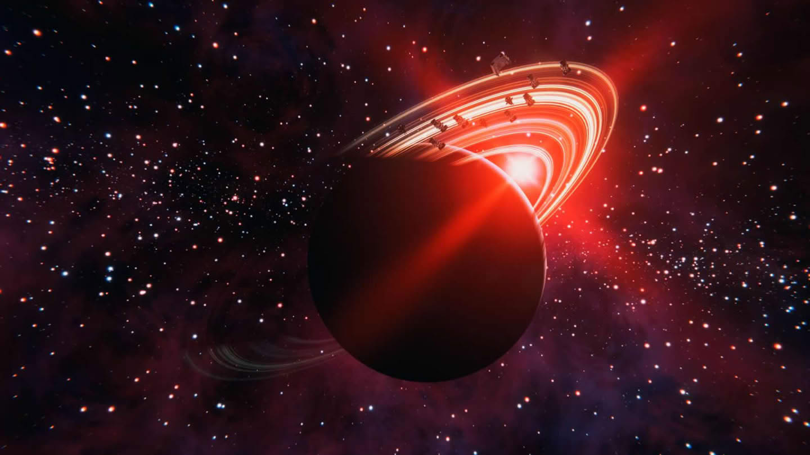
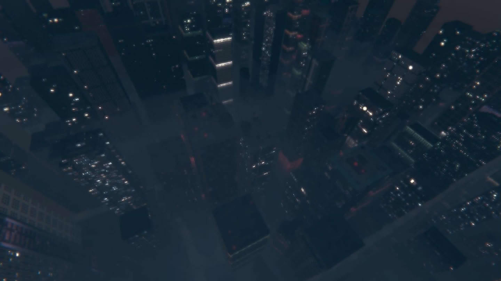
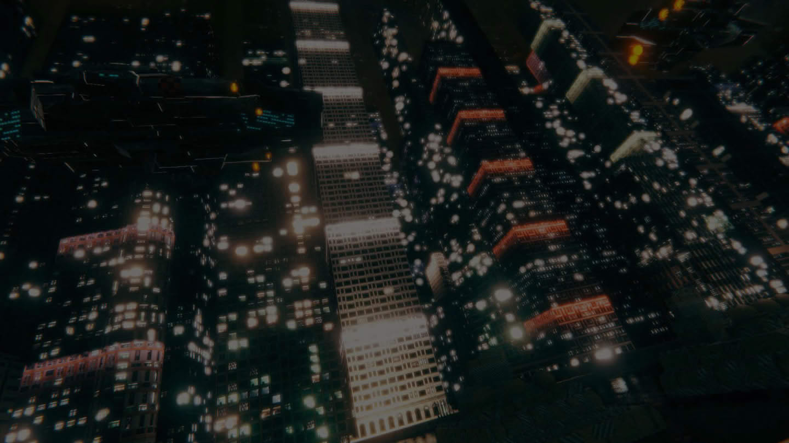
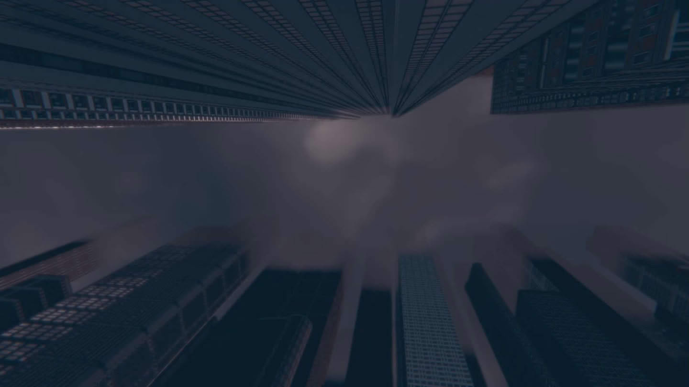

数个遥远的恒星同时发生了超新星爆发. 夜空中出现数个亮星, 格外耀眼. 天象异变令国民无所适从. 作为大祭司, 我需要行动起来了; 在我们的国度, 任何不常有的现象都会被视为至高神的意志, 可供静思的场地比民居还多. 太古以来便是如此; 我到达位于恒星轨道上的巨型沉思殿, 在默祷中得到了至高神的旨意: 一个人的祈求不足以得到答案, 星象异变的启示只会在整个族群联结且持续的静思中降临; 得为集体静思仪式做准备了; 每次得到的指引都大同小异. 但是大祭司的职责就是执行这些指引. 是时候开始工作了;
—————
if(场景开端){ 昭秘首脑: 大祭司, 得益于你的祷告, 至高神已为我们明确指出了洞察奥秘的道路; 我们智慧浅薄, 不借助于至高神来探求真理, 我们将永远无法揭示异变的奥秘; 大祭司, 尽一切所能, 按至高神的指引行事, 让我们走出迷局 };
祭仪助手: 我是您的助手, 会辅佐您达成这次集体冥思仪式(任务: 建造六个沉思殿)(可选任务: 在 1700 年内完成任务);
—————
if(首个沉思殿建筑被建立起来){ 祭仪助手: 大祭司, 请恕我进言. 如果每个人都过早地沉浸在冥想中, 我们的技术进步将可能会受到影响(可选任务: 不要让科技增速变为负数) };
if(文明的科技点增长值小于 0){ 祭仪助手: 大祭司, 人们自发地沉湎于冥思之中, 正常的社会生活, 已经受到影响了 };
—————
if(年份 >= 400Y){ 祭仪助手: 我们似乎冷落了科研的领域, 科研人员要求我们为他们提供支持(事件: 科学家的不满) };
—————
if(年份 >= 800Y){ 祭仪助手: 大祭司, 我们的探险队发来了一个遥远星系的数据; 在数百年前, 那个星系曾是一个盛大的静思广场; 如果我们能够将那片静思广场重建, 那么那里将会成为一个完美的集体冥思地点(可选任务: 重建静思广场) };
if(拆除北极星星系上的所有遗迹){ 祭仪助手: 大祭司, 你做得很好. 这下我们有了能容纳几百万人同时静思的场所了 };
—————
我们为民众建造了最理想的沉思殿, 在高耸入云的灵感塔上, 主持着一场又一场规模磅礴的共想会; 枢机团对我的工作非常满意, 我又一次回到首都接受昭秘首脑的授勋; 尽管不是首次回到首都, 我还是被这壮观的景象所震撼. 在轨道电梯上, 鳞次栉比的沉思设施尽收眼底, 一直延伸到地平线; 昭秘首脑端坐在诸沉思殿的正中, 一边欣赏着艺伎的舞蹈, 一边听取着我的报告; 昭秘首脑似乎无心观看演出, 喃喃自语道, 异变的启示近在眼前了; 显然, 祭仪助手们早将沉思盛事的进展传达过来了. 对此我没有什么特别的想法;
我们的文明由 14 个星区构成, 其间遍布着大大小小的政权, 不同星区之间由虫洞连接着; 关于这些虫洞的形成原因, 我们的科学家毫无头绪. 祭司们则将虫洞称之为"神之桥梁", 将其看作至高神为我们建造的通道, 让我们文明的不同地区间彼此联结, 团结在一起; 由于我们当前还没有掌握曲率航行的技术, 所以这 14 个星区就是我们认知的全部了. 对于更深处的太空, 我们几乎一无所知; 但如今, 位于文明最为边陲的第四星区出现了叛乱, 我奉命前去应对;
—————
if(场景开端){ 区域祭司: 叛军作乱了数十年. 本地其他两个势力拒绝响应我们的动员, 他们割据一方, 向来不听指挥 };
大祭司: 情况看来还有些复杂, 那么, 我该从哪里着手呢?
区域祭司: 尽快降伏在星区兴风作浪的叛军; 但是我们在当前星区的势力还比较薄弱, 需要您和另外两个本地势力取得联系, 动员他们协助平叛(任务: 找到自治守军并传达动员命令, 找到奥义求索者并传达动员命令)(可选任务: 凝聚力 >= 50);
—————
if(与南河三星系交流){ 自治守军: 千年来我们一直被当作门卫使唤; 收到开战信息了, 我们会协助你们降伏背叛者的 };
if(与箕宿一星系交流){ 奥义求索者: 把我们驱逐到这, 现在还不满足吗; 想让我们为你们冲锋陷阵… 好吧, 就这一次 };
if(成功笼络自治守军和奥义求索者){ 区域祭司: 我们总算拉起了一条战线, 是时候降伏背叛者了(任务: 消灭背叛者) };
if(提前攻击自治守军或奥义求索者){ 区域祭司: 您这是干什么? 这是我们的盟友啊(注解: 消灭背叛者后就不会触发) };
—————
if(消灭背叛者){ 区域祭司: 大祭司, 背叛者已被击溃 };
大祭司: 很奇怪, 根据我们的情报, 他们至少还有另外的两个移民地, 是谁帮我们消灭了呢?
奥义求索者: 不是我们;
自治守军: 也不是我们;
奥义求索者: 难缠的叛徒, 终于被消灭了!
自治守军: 现在, 我们的威胁只有一个了—
奥义求索者: 是啊, 是时候让这些成天把我们当枪使的人, 也尝尝被炮弹轰击是什么滋味了;
自治守军: 没错. 只有这样他们才能学会重视我们的需求;
区域祭司: 他们早对我们离心离德, 必须出兵压制他们(任务: 消灭自治守军和奥义求索者);
—————
if(消灭自治守军和奥义求索者){ 区域祭司: 无论如何, 当前星区的威胁已经被解除了, 这里又重新归于我们的掌控; 等等… 我们收到一条紧急汇报; 我们检测到这里似乎出现了一个虫洞, 它的另一端是一个陌生的星区! 还有一些不明来路的舰船正在从虫洞的入口驶出; 这, 怎么可能… 我们的疆域里, 怎么会还存在没被发现的虫洞(任务: 与出现虫洞的星系交流) };
if(与出现虫洞的星系交流){ 伦布探险团: 我们是伦布探险团, 来自伟大的卡斯蒂利亚远征军; 我们为远方的财富和未知的世界而来; 不要和我们作对, 我们的实力远在你们之上 };
—————

我们接引探险团的使节抵达了首都. 他们乘坐着在地面上都可以目睹的战舰, 惊人尺寸, 给我们的人民带来了巨大的震撼; 这些船舰曾从第四星区凭空出现的虫洞中鱼贯涌出. 如今, 它们轻盈无声地悬浮在我们头顶, 遮天蔽日; 人群骚动不止, 祭仪议论纷纷. 他们中有不少人相信, 我们的冥思终于打动了至高神, 这些人是神派来向我们揭示奥秘的使者; 昭秘首脑静默不语, 不知道在思考着什么. 很久之后, 他抬起头来缓缓说道: 带给他们最丰厚的礼物, 盛情款待他们. 我们需要他们加入集体冥思仪式, 将所知贡献给我们;
数场陨石雨洗劫了我们的几个行星, 另外几个农业行星上也爆发了罕见的旱灾. 灾难蹂躏着我们的国家; 昭秘首脑和祭仪助手们认为, 我们惹怒了至高神, 他们猜测是我们对神使的接待还没有满足他的预期; 因此, 我被任命为使团的领队, 带着丰厚的礼物, 抵达了访客的舰队停泊的地方; 他们热情地欢迎了我们. 但是我注意到, 他们所有的武器都是上膛的; 他们对我们赠送的音乐, 以及书籍和冥思石, 似乎都不感兴趣, 但是却对氦三结晶制成的工艺品展示出异常的热情; 小孩子都知道, 这样一块小小的结晶, 便足够为一座城市供能数年; 他们热情地询问我们, 关于这种结晶的产地, 我们还有多少矿场, 诸如此类的问题; 我们停留数日后, 便返回了首都. 我总是觉得他们别有所图, 不过我没有把这个想法分享给任何人;—————
if(场景开端){ 区域祭司: 您终于到我们第十二星区了 };
大祭司: 立刻汇报状况;
区域祭司: 叛教者攻占了我们的数个星系, 击垮了我们在本星区的所有军事力量; 目前他们在二号星团至少占据了五个星系; 伦布探险队位于三号星团, 我们目前尚且不清楚他们的意图… 一号星团有我们的堡垒, 占据着整个星区的战略要道; 虽然航路已被切断, 但仍可通过星门向他们输送资源; 如果能守住这片战略要道, 能为我们带来不少便捷(任务: 消灭背叛者);
if(经过了 30 年){ 区域祭司: 我们现在的军事力量恐怕还不是背叛者的对手. 但我们不一定要死守一个地方, 可以考虑采用游击的策略; 比如, 我们可以在堡垒周围布置几个太空港, 当堡垒被攻击后沦陷, 我们可以抢在敌人之前将堡垒占领回来(可选任务: 别让堡垒星系在 1000 年内被背叛者占领) };
—————
if(超过 1000 年且堡垒所在星系还在){ 区域祭司: 只要守住战略要道, 就还有胜机; 那些背弃了至高神的亵渎者, 必不能胜过我们 }else if(超过 1000 年且堡垒所在星系丢失){ 区域祭司: 我们没能夺回堡垒, 堡垒已经被敌人占领了, 接下来, 要陷入一番苦战了 }else if(超过 1000 年夺回丢失的堡垒星系){ 区域祭司: 虽然艰难, 但我们在扳回局面, 还有胜机 };
大祭司: 发生什么事了?
区域祭司: 我们被攻击了, 堡垒所在的星系被攻破了, 是低维化; 这怎么可能… 我们的移民地, 是直接从内部被低维化的!
大祭司: 背叛者怎么可能会有这种技术…
区域祭司: 大祭司, 有外部的通讯接入!
大祭司: 接通 ——
伦布探险团: 大祭司, 我们好久不见了;
大祭司: 是你们教唆背叛者?
区域祭司: 什么?!
伦布探险团: 我们只是提醒他们, 比起沉迷什么云里雾里的玄思, 跟着我们更能发大财而已;
大祭司: 果然… 你们根本不是什么神使!
伦布探险团: 大祭司, 我们有过一面之缘, 看你像是个明白人, 就多说几句; 你们坐拥着数之不尽的氦三结晶, 却把它作为工艺品, 何其可笑! 你们的领袖愚昧不堪, 宗教更是可笑之极. 空想是不会有回报的, 专心发财不好吗? 投降吧, 大祭司;
大祭司: 你们这些贪婪的强盗, 我会让你们为自己的亵渎行为付出代价的!
伦布探险团: 不得不说, 作为一个小小的探险团, 我们可能不是你们庞大帝国的对手; 但是凭借技术优势, 还有联合那些对神怀有质疑的人们, 我们会击溃你们的(任务: 消灭背叛者和伦布探险团);
大祭司: 即刻向中央报告他们的意图; 他们怎么敢冒充神的使者? 我们必须把他们赶出这里!
区域祭司: 他们似乎会使用某种我们不知道的技术, 可以把低维空间封装起来再发射出去, 他们将这种技术称作零点聚爆弹; 他们的技术确实高于我们, 这是事实; 不过, 他们制造的低维空间范围较小, 似乎和质量弹一样可以被探测和拦截; 也许, 我们可以利用这点来抵挡他们的攻击;
—————
if(消灭叛教者){ 区域祭司: 这就是亵渎神明的下场, 在囚牢里后悔吧 };
if(消灭伦布探险团){ 区域祭司: 胆敢伪装成神的使者, 在金币熔浆里品尝财富的味道吧 };
—————

如果伦布探险团的残余部队能看到, 他们的战俘是如何被我们改造成最虔诚的神仆, 他们的士气定会被极度震慑; 意识编织手段过于残忍, 早在数千年前就被取缔了. 然而, 伦布探险团的渎神行为令军队中的激进者们震怒不已, 所以他们还是对战俘动用了这种刑罚; 我并不十分赞同这种做法. 我在刑场上, 通过一些灰色手段, 救下了一些探险队员; 只是希望从他们的口中, 一窥那个远方国度的面貌; 令人震惊的是, 他们告诉我, 这个和我们打得有来有回的强大对手, 就只是那个未知文明的一个小小的拓荒队而已; 他们来自于一个由数万个星域组成的超大星系群, 那个星系群中存在数百个像他们这样强大的文明… 而他们的祖国, 卡斯蒂亚科学理事会只是一个处在整个星系群边陲的弱小国家而已; 一个比他们强大数十倍的大帝国, 阻断了他们通往星系另一边的贸易通道; 因此他们不得不通过调谐虫洞来发现新的贸易通道, 却阴差阳错地来到了我们的星系; 我们的星系的氦三结晶的产量超乎他们的想象, 对他们来说, 我们这里是座宝山; 我们这种冥思和敬神的文化在他们看来, 是原始文明才有的习俗; 在他们的眼中, 我们就和尚未开化的原始人差不多; 我隐隐预感, 我们即将遇上远方那些兴盛文明的冰冷目光;
昭秘首脑和祭仪助手们无疑被前线的消息震惊了. 当我们在前线拼杀, 他们必须向民众解释一个更根本的问题: 至高神是否还在照料我们? 他为何任由我们的文明被这种种灾祸蹂躏; 前线的将士们早就看穿了伦布探险团强盗的真面目. 只可惜, 母星的神官们始终对这些敌人抱有幻想. 他们难以理解从神的桥梁中走出来的伦布探险团声称自己与神毫无关系; 在中央首脑们意志摇晃时, 伦布探险团趁虚而入. 他们买通不少祭仪助手, 向昭秘首脑进献谗言. 最终竟让他相信, 探险团希望得到机会, 来认识我们的至高神; 昭秘首脑再次邀请伦布探险团来到首都, 向他们展示数百年来我们所修建的沉思殿, 赠予他们最精纯的沉思石, 来引领他们归顺至高神; 毫无疑问, 这是引狼入室. 伦布探险团兵不血刃地控制了首都, 将昭秘首脑软禁起来; 胁迫昭秘首脑发布手谕, 他们在首都如入无人之境, 肆意妄为; 氦三结晶制成的宏伟石碑被他们摧毁熔炼, 一船一船地运回他们的驻地; 这伙贪婪的暴徒, 是时候终结他们的恶行了;—————
if(场景开端){ 大祭司: 我们赶回来了, 立刻汇报状况 };
反抗军首领: 情况危急; 首都圈已彻底被伦布探险团占领, 我们必须夺回; 首都圈外的星系群依然在我们的控制中; 但由于首都指令系统瘫痪, 这些星系的机能也瘫痪了; 我们应该集中精力击溃敌军. 等赶走了伦布探险团, 一切都可以重建; 我们已在外围建立了一个根据地; 我们的文明能否挺过这次劫难, 就看接下来这番战役了(任务: 消灭伦布探险团, 夺回首都);
—————
if(经过了 30 年){ 反抗军首领: 大祭司, 未知文明攻击了我们的星系; 他们的武器… 神啊… 我们绝对不是他们的对手 };
斯蒂亚远征军: 我们是卡斯蒂亚远征军, 我们需要大量氦三结晶, 交出来, 保证你们的安全(任务: 消灭卡斯蒂亚远征军);
—————
if(经过了200 年){ 反抗军首领: 大祭司, 他们的舰队比我们强太多了! 每场战役他们都取得了碾压性胜利, 该怎么办 };
大祭司: 我们该尝试用质量武器, 弥补和他们的科技代差;
反抗军首领: 此外, 我们的线人提供了一些情报; 敌人建立了许多实验场. 它们均是人造星系, 并且位于主星团之外; 如果扫描一下那些看起来一无所有的区域, 应该会有所发现; 击溃科学试验场, 也许我们可从残骸中提取研究成果, 以缩小我们的科技代差(可选任务: 摧毁伦布探险团的所有人造星系);
if(每当我方摧毁伦布探险团的人造星系){ 大祭司: 通过分析敌方的科学试验场数据, 我们得到了他们的大量研究成果 };
—————
if(反抗军势力覆灭){ 反抗军首领: 大祭司, 我们无法战胜他们, 他们的实力实在太强大了… 接下就来只能靠你自己了 };
if(夺回首都既南河三星系){ 反抗军首领: 我们已经夺回了首都. 昭秘首脑的安全也已经得到确认, 首都设施的恢复工作正在进行中; 是聚爆弹, 敌人终于出动杀手锏了; 这种武器对目标的打击是毁灭性的, 我们一定要想办法将其在半路拦截 };
—————
if(伦布探险团势力覆灭){ 反抗军首领: 报告大祭司, 伦布探险团已经被击溃, 他们的领袖驾船逃窜, 被我们给抓到了 };
伦布探险团: 等等! 别杀我; 我是卡斯蒂亚科学理事会的重要人物. 你们要是把我杀了, 理事会是不会和你们和平谈判的; 你们最好好的款待我. 首先, 给我安排一个像样的住处吧;
大祭司: 不用带回首都了. 给他背上一天的氧气, 丢进太空, 让他好好享受下死亡的恐惧吧;
伦布探险团: 别! 我可以告诉你怎么开发氦三结晶; 啊 ——
反抗军首领: 丢进太空!
—————
if(卡斯蒂亚远征军势力覆灭){ 反抗军首领: 他们撤了 };
大祭司: 胜利只是暂时的, 恐怕他们很快会重回这片星域;
—————

当我们夺回首都时, 这些侵略者的舰队不断地升空逃跑, 遮天蔽日如蝗灾一般; 他们舍不得抢来的财物, 将他们掠夺到的雕塑, 绘画, 当然还有氦三结晶都带走, 带不走的大型雕塑和庙宇就破坏掉; 不计其数的财宝装满了他们的货舱, 船员室甚至驾驶室, 好多舰船快被我们的地面部队撵上了才摇摇晃晃起飞; 大量飞船严重超载. 很多飞船不是被我们击落, 而是被重量压沉, 摔落到地面上, 只剩遍地燃烧着的渣滓; 第一沉思殿的中央, 人们在堆积如山的残骸里发现了昭秘首脑. 他已没有了呼吸, 没人知道他什么时候被埋在了这里; 城市受到的破坏超乎想象, 重建工作艰难地推进. 然而更麻烦的事接踵而至; 那些外来入侵者身上似乎携带了某种病菌, 对他们来说只是感冒, 但对缺乏对应免疫机制的我们来说, 这无疑是一种瘟疫; 病毒随着飞船传播向一个又一个星系, 疫情开始在我们的文明中扩散, 越是恐慌, 人们就越是朝着附近的沉思殿聚集冥思, 以乞求至高神的怜悯, 这无疑加速了疫情的传播. 可怕的是, 对此我们无法做任何限制; 整个文明已来到崩溃的边缘. 我知道, 这还远远不是磨难的终点; 遥远星系的那些侵略者, 他们还会回来的;所有人都希望, 在见识到我们的反击之后, 卡斯蒂亚远征军会离开我们的这片星域; 然而, 对着数之不尽的财富, 他们无法放弃执念. 他们撤退到了星域边界, 并驻扎了下来, 开始建造大量的船坞和星门; 那些星门, 将他们的舰队从遥远的星系转移过来, 源源不断, 如地狱的门户; 在过去, 我们从未深究过那些虫洞的原理. 而如今, 我们拿这些星门毫无办法, 只能眼睁睁看着敌人在我们的国境线上陈兵; 不久之后, 前哨回报: 卡斯蒂亚科学理事会的主力舰队集结完毕; 在这十万火急的之际, 又有两个星系的政府背叛了祖国, 他们为了保全自己的性命而投奔了敌人; 尽管已经到了内外交困之时, 但我们并不打算坐以待毙, 而是集结最后的兵力, 共同防御我们屹立了六千年的首都; 我走上沉思殿的顶端, 用古老的方式吹响了战争的号角, 开启了我们同卡斯蒂亚科学理事会的最后一战;
—————
大祭司: 汇报当前战况;
总司令: 相当不乐观, 敌人几乎把我们包围了; 国家内部还出现了叛徒. 他们此前极力主张议和以避免伤亡, 如今决战开始, 他们直接与我们断绝了联系; 这些是受他们控制的移民地. 虽然他们目前还很弱, 但他们毗邻首都, 必须警惕; 况且我们也无法确认他们是否已经投敌. 因此, 我们最好尽快解决掉他们; 另一方面, 卡斯蒂亚远征军作为先遣部队, 已经开始攻打我们的星系了; 不久前我们失去了对那些移民地的控制; 卡斯蒂亚科学理事会的主力舰队也到了这里; 为了对我们进行合围, 他们建了大量人造星系, 还有森严的防御设施和充满威胁性的军事设施; 他们科技优势巨大, 前期最好是别和他们硬碰硬; 我们正处在最困难的时刻. 请领导我们度过难关(任务: 消灭背叛者, 消灭卡斯蒂亚远征军, 消灭卡斯蒂亚科学理事会);
总司令: 如果我们的首都星系陷落了, 将会极大打击我们的士气(可选任务: 不要失去首都);
if(首都星系陷落){ 总司令: 大祭司, 我们失去了首都, 士气非常低落 };
总司令: 凝聚力至关重要, 团结才有希望(可选任务: 凝聚力不要低于70);
if(凝聚力小于70){ 总司令: 我们正在渐渐失去希望啊 };
—————
if(时间 >= 200 年){ 背叛者: 大祭司, 我们有话要说 };
总司令: 无耻的叛徒, 事到如今你竟还敢出现在我们面前;
大祭司: 给他们一分钟;
背叛者: 谢谢你, 大祭司! 说完我马上走; 我们并不想和你们作对; 你知道那些来自星空另一端的人有多么可怕; 我们只是因为害怕! 你没看到他们是如何将一整颗星球烧成玻璃的;
大祭司: 赶紧, 说重点;
背叛者: 我们需要资源, 因为我们要逃走! 只要我们能逃走, 离开这里, 我们就再也不会和你们作对(事件: 叛徒的请求);
if(接受叛徒的请求){ 背叛者: 太好了, 终于能离开这水深火热之地了(注解: 给资源后, 背叛者势力势力将自动覆灭) };
—————
if(时间 >= 800 年){ 总司令: 大祭司, 我们收到了一个来自卡斯蒂亚远征军的通讯请求 };
大祭司: 接入通讯请求;
卡斯蒂亚远征军: 大祭司, 久仰大名了, 我是远征军司令;
大祭司: 你是从伦布探险团的领袖那里了解到我的事情吗?
卡斯蒂亚远征军: 大祭司误会了. 我并不关心你和他的事;
大祭司: 不要卖关子了;
卡斯蒂亚远征军: 没有兴趣做个交易; 卡斯蒂亚科学理事会现在铁了心要击溃你们. 我们远征军被作为先头部队; 换句话说, 就是炮灰, 为他们后续部队争取更多制备军需的时间; 我们可不是为了送命才参军的; 给我们钱, 我们就这场战争中作壁上观; 您的回答是什么? 大祭司(事件: 远征军的请求01);
if(接受远征军的请求01){ 卡斯蒂亚远征军: 很好, 考虑一下. 如果军团的每个人都对分到的金额满意, 我们就会停火 };
大祭司: 你刚才说的可是一口价! 怎么现在又要坐地起价?
卡斯蒂亚远征军: 你们这些原始部落也实在太天真了, 你们是弱势的那一方啊, 照我说的做, 好吗; 我会再度联系你们的;
—————
if(接受远征军的请求01){ 卡斯蒂亚远征军: 又见面了 };
大祭司: 又耍什么诡计?
卡斯蒂亚远征军: 我们好好反思了一下, 觉得之前那样背信弃义的确实不好; 但我们军团的每一个人, 都有一个发财的梦想; 所以, 如果你再给我们四倍的钱, 我们就走. 这次绝对是一口价了. 大祭司, 不知你意下如何(事件: 远征军的请求02);
if(接受远征军的请求02){ 卡斯蒂亚远征军: 很好, 生意就是要合作共赢; 但战场上我们还是要做做样子, 希望你理解 };
总司令: 大祭司, 看来卡斯蒂亚远征军遵守了和我们的约定; 他们仍在攻击, 但已经开始限制自己的火力; 一旦我们击败了卡斯蒂亚科学理事会的主力, 他们应该也会及时收手, 无需和他们血战到底(注解: 消灭卡斯蒂亚远征军不再是任务目标);
—————
if(我方的某个星系沦陷){ 总司令: 大祭司, 我们前方的斥候发现, 卡斯蒂亚科学理事会的主力有动作了; 他们的军事系统开始高强度的运转, 这次对我们移民地的轰炸恐怕是正式总攻的开端; 卡斯蒂亚科学理事会携带了数量众多的聚爆弹, 它们的破坏力是灾难性的, 我们一定要小心(注解: 零点聚爆弹在击中目标星系后, 会产生一个半径为 60 的中型低维空间) };
—————
曾经, 我们文明的首都聚集了超过 240 亿居民, 它拥有七十二万座高耸入云的沉思殿; 但是如今, 很难想象, 这片遍地残垣的焦土, 曾是那座自古繁华的圣城; 然而, 坍圮的城市可以再建, 焚毁的艺术可以重新创造, 丢失的哲思也可以再次寻索; 更何况, 卡斯蒂亚科学理事会最终灰溜溜地离开了我们的世界. 现在, 所有人都沉醉在胜利的喜悦中; 只是我至今没有忘记, 卡斯蒂亚科学理事会来自的那个庞大的世界, 那个拥有数万个星区的庞大文明. 在它面前, 我们是多么渺小; 卡斯蒂亚科学理事会虽然离开了, 但我们的坐标也已经暴露, 将来肯定会有更多更强大的文明到我们这里来一探究竟; 这里将是他们的新世界. 而我不太确定的是, 在那个新世界里, 是否还有我们的一席之地… 这只是阶段性的安稳, 未来如何尚不可知晓, 但我们绝不会屈服的, 我们的文明会抗争到最后的一刻;